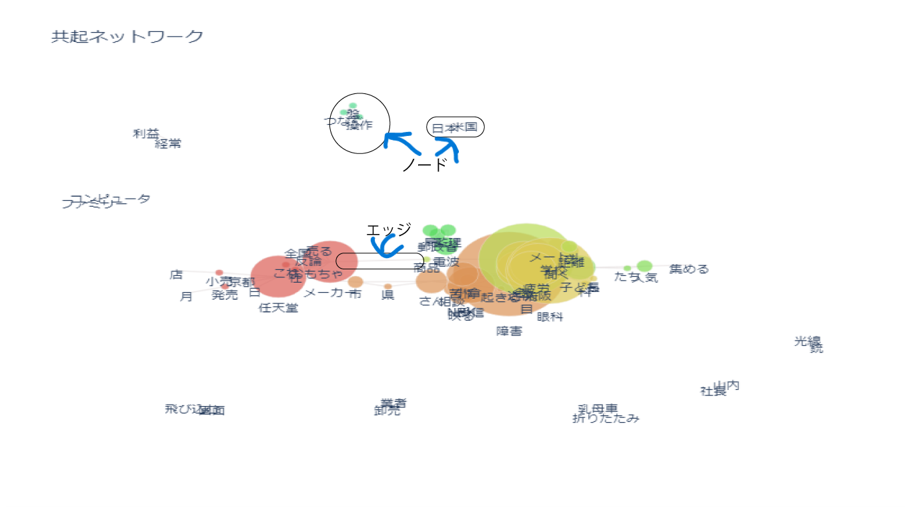
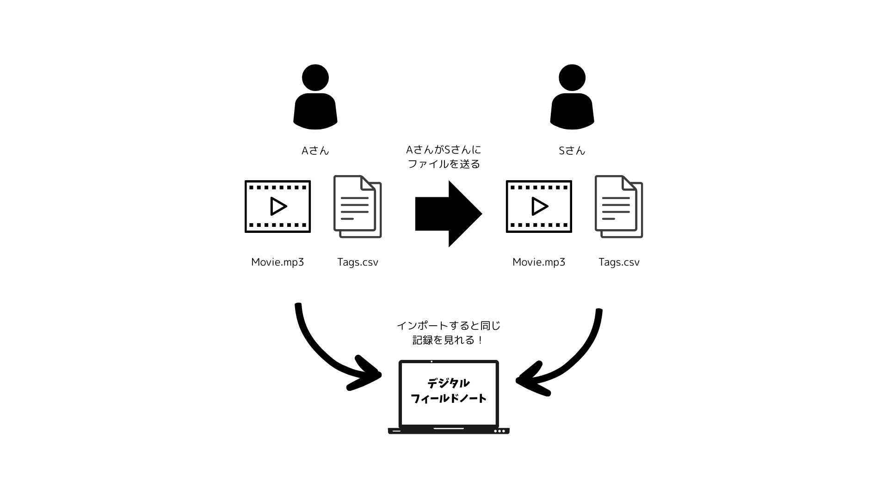

2025鎌倉共創プロジェクト
5/7 2025
Doyolab
共起ネットワークとは？
共起ネットワークとはる文章やデータ内で複数の単語や要素がどのように同時に現れるか（共起）を視覚的・構造的に表現するネットワーク構造のことを指す。 単語や概念などの「要素」を表すノードと2つのノードが共起した場合に引かれる線であるエッジで構成される。 エッジは頻度が多いほど太くなる。共起ネットワークは自然言語処理やテキストマイニング、マーケティング、認知科学などで活用される。
デジタルフィールドノートのつかいかた
>デジタルフィールドノートのぺージにとんで動画をインポートする。その次にインポートした動画を再生しながらタグ付けをする。 この時、短めのメモをつけることが可能。一度タグ付けをするとタグをクリックすることで簡単にその動画の指定場所にとぶことができる。 完成したら右側にある、保存＆ダウンロードからCSVファイルをダウンロードができる。 またデジタルフィールドノートには動画ファイルとCSVファイルさえそろっていれば簡単に内容を共有することができる特徴がある。 図示したものは以下。
CSVファイルの結合方法について
このプロジェクトでは、グループ活動をする関係上、動画を一定時間分けてタグ付けをするという作業をする場合がある。 そのためのCSVファイルの結合方法についてまとめる。
- 他の人が作ってくれたCSVファイルも自分のデバイスの中に保存する
- ここにアクセスしてファイルを選択から該当のCSVファイルすべてを選択する
- 統合してダウンロードを押してダウンロード
- デジタルフィールドノートのぺージに戻って対応している動画とダウンロードされたCSVファイルをインポート
- なにもせずに保存＆ダウンロードを押す
- 5でダウンロードしたファイルをインポート